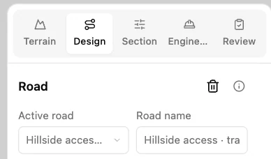
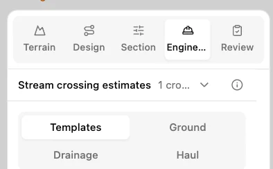
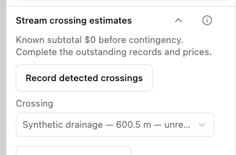
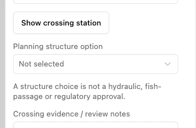

Record a stream crossing
Use Hillside access on the synthetic training terrain in Guided mode. Its road crosses the mapped Synthetic drainage line near station 0+600.5.
1. Open the engineering tools
Select Engineering in the workflow tabs. The stream crossing summary shows whether any detected crossing still needs a record or a price.

2. Expand the crossing estimates
Open Stream crossing estimates. The example starts with one detected crossing and an incomplete or unpriced estimate.

3. Record the detected intersection
Select Record detected crossings. DDC Access creates a record for the active road’s intersection with Synthetic drainage.

4. Review what still needs a decision
The record shows Synthetic drainage at 600.5 m. Planning structure option is still unselected, and the cost items need quantities, rates and a price source. Record design and field evidence before selecting or pricing a structure.
